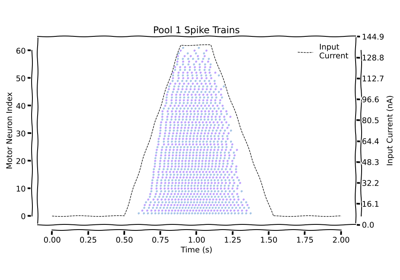
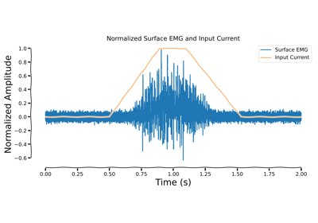

Examples# Recruitment Thresholds Recruitment Thresholds  Motor Unit Spike Trains Motor Unit Spike Trains Muscle Model Muscle Model Surface Motor Unit Action Potentials Surface Motor Unit Action Potentials  Surface EMG Signals Surface EMG Signals Current Generation Current Generation Gallery generated by Sphinx-Gallery